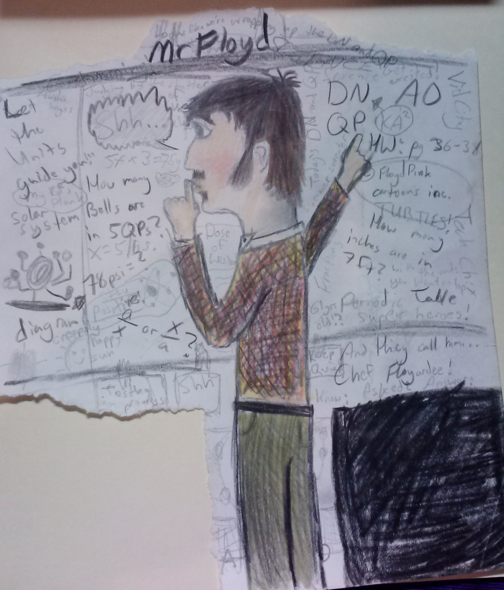
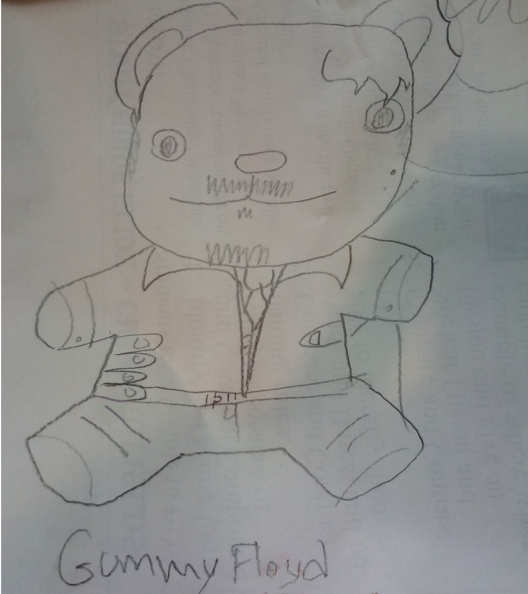
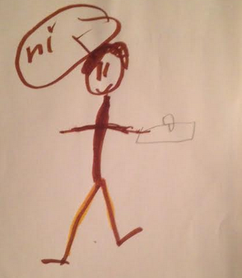
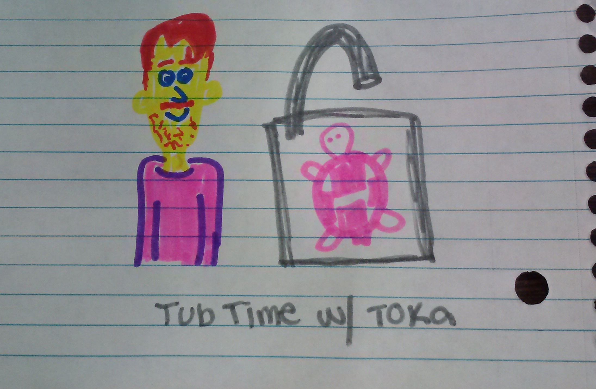
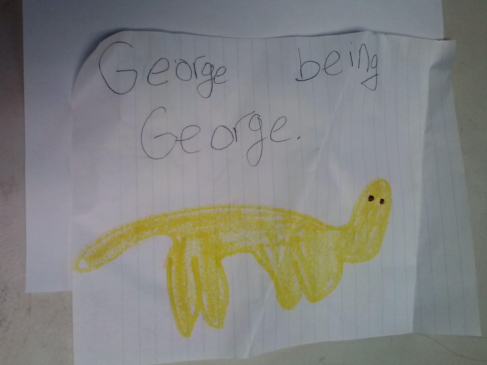
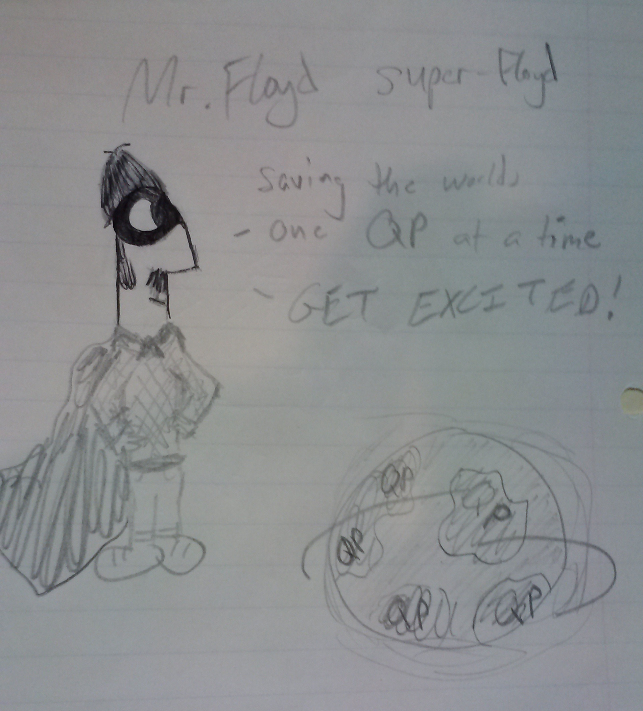
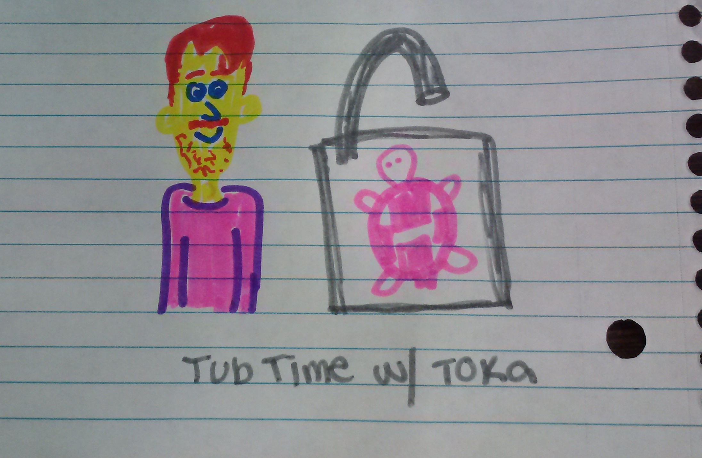
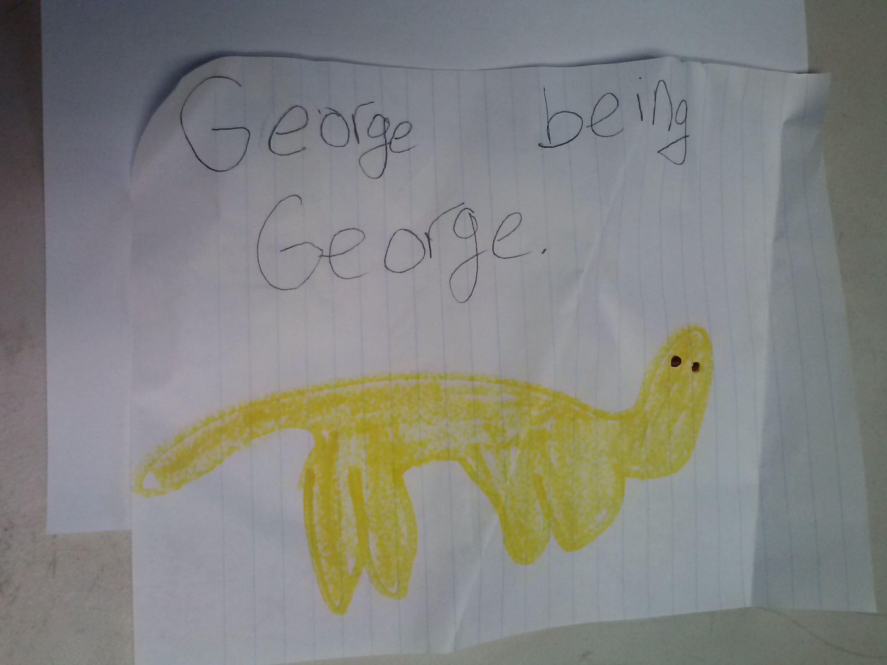
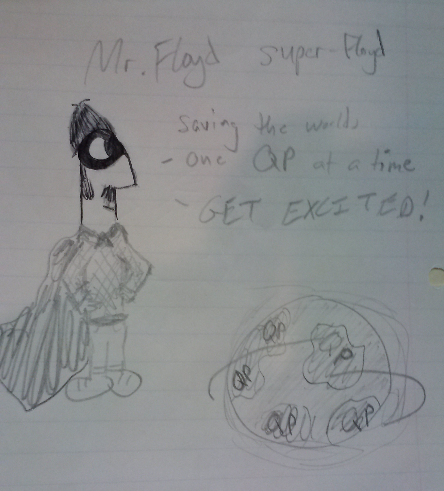

Student Portraits of Mr. Floyd

Let's face it; EVERY teacher EVER has been drawn by one of their students! While some of these "board-walkian caricatures" can be a bit bemusing at times, every once in awhile a student will draw something "from your good angle" that'll end up worthy of praise! Here are the very BEST of these student-created portraits!
   




